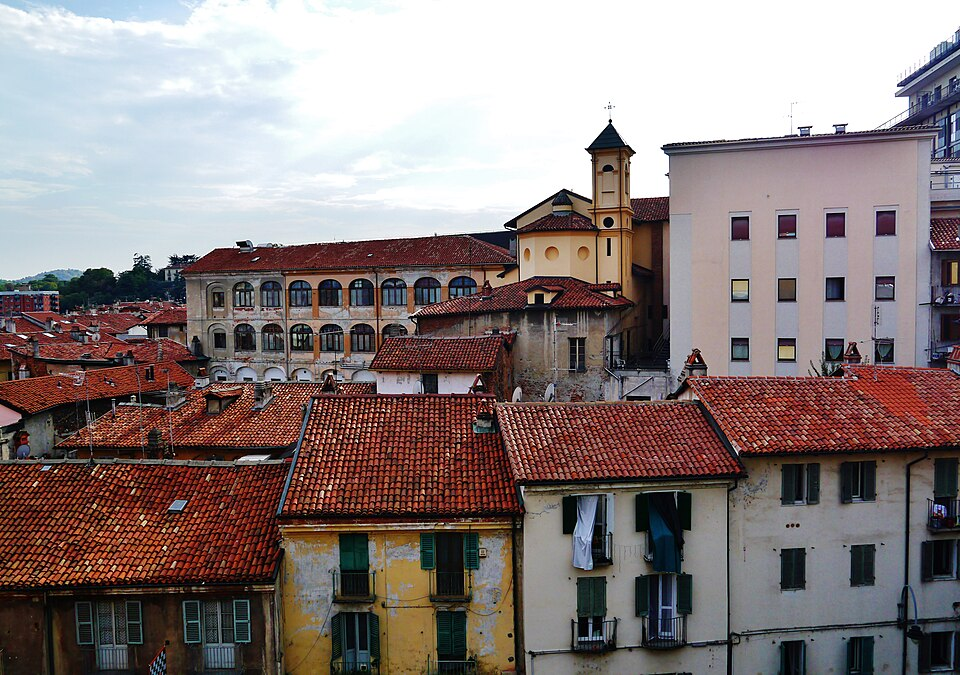
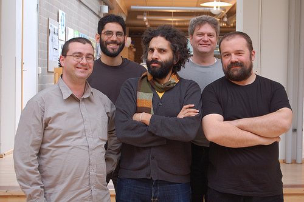
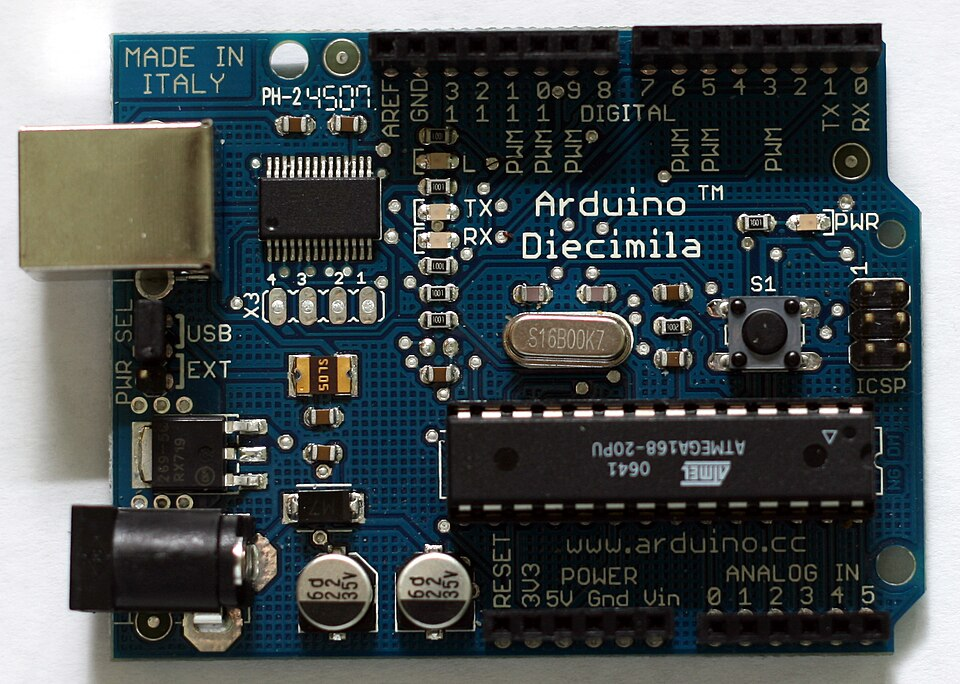

La historia de un cerebrito que cambió el mundo…
y que muy pronto vas a mandar tú.
Misión detective
Toca cada objeto y descubre si tiene un microcontrolador adentro.
Los cerebritos están por todas partes…
Parientes cercanos
Un cerebro gigante: hace mil cosas a la vez — juegos, videos, tareas…
Tiene pantalla, teclado y cuesta caro.
Un cerebrito con una misión: repite SU programa una y otra vez, sin cansarse jamás.
No tiene pantalla ni teclado… ¡tiene pines para sentir y actuar!
¿Quién gana? ¡Ninguno! Son un gran equipo:
el computador escribe las órdenes y el Arduino las cumple.
La receta secreta de todos los robots
Los sensores son sus sentidos: ven distancias, miden calor, escuchan.
El cerebrito decide con las reglas que TÚ le programaste.
Los actuadores son sus músculos: luces, sonidos, motores.
Una puerta de supermercado 🚪 siente que llegas,
piensa "¡alguien viene!" y actúa abriéndose. ¡Es un mini robot!
📖 La historia · capítulo 1

Érase una vez, en un pueblito de Italia llamado Ivrea, una escuela donde los estudiantes inventaban cosas locas: lámparas que respondían, máquinas que saludaban…
Pero había un problema: los cerebritos para sus inventos eran carísimos 💸 — ¡como 100 dólares! — y si se quemaba uno… adiós mesada del mes.
Año 2005. Sus profesores decidieron hacer algo al respecto…
📖 La historia · capítulo 2
Los profesores se juntaban en su bar favorito del pueblo: el Bar del Rey Arduino, llamado así por un rey que vivió ahí hace más de ¡mil años!
Ahí, entre pizzas y servilletas con dibujos, diseñaron una placa barata, resistente y fácil de usar para sus estudiantes.
¿Y el nombre? Fácil: la bautizaron como el bar…
¡Arduino! 🎉

📖 La historia · capítulo 3

Cuando un invento es un éxito, lo normal es guardar la receta en secreto y hacerse rico. Pero ellos hicieron lo contrario: publicaron los planos gratis en internet, para que cualquier persona pudiera copiarla, fabricarla y mejorarla.
A eso se le llama hardware abierto. Por eso hoy hay millones de Arduinos en el mundo… ¡y por eso el tuyo cuesta poquito! 🌍
Duelo de cerebritos
Fin del capítulo 1
Ya sabes qué es Arduino y de dónde viene.
En la próxima sesión vas a conectar uno de verdad
y darle tu primera orden.